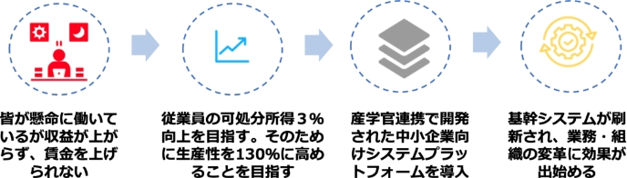

5-2-3. DXの推進
デジタルトランスフォーメーション（DX）の推進における中小企業の優位性について説明します。デジタルトランスフォーメーションとは、デジタル技術やツールを導入すること自体ではなく、データやデジタル技術を使って、顧客目線で新たな価値を創出していくことです。中小企業の中には、デジタルトランスフォーメーションを推進し、売上高を5倍、利益を50倍に増加させた企業が存在します。中小企業ならではの優位性を理解し、積極的にデジタルトランスフォーメーションに取組むことで、大きく成長できる可能性があります。以下では、デジタルトランスフォーメーションを推進する際に、中小企業の優位な点を説明します。そして、優位性を利用してビジネスモデルや企業文化などの変革に取組んでいる企業の事例を紹介します。
中小企業がデジタルトランスフォーメーション推進における優位な点
参考情報が豊富
DXを既に手掛けている中小企業や、デジタルトランスフォーメーションを順調に進めている企業のやり方を参考にすることができる
環境が整備されている
先行者や大企業などにより既に整備されたプラットフォームを利用し、新たなビジネスに取組むことができる
環境の変化に素早く対応しやすい
経営者が即断即決し、新しい取組みに臨みやすい利点がある。そのため、変革のスピードにおいて優位性を持つことができる
事例（企業文化の改革）：精密機械部品加工
産学官連携で開発された中小企業向けの共通業務システムプラットフォームを導入し、長年の業務を支えた基幹システムを刷新しました。その結果、無駄な業務や無理な計画などが判明しただけでなく、各部署のデータが繋がるようになりました。これにより、各部署がそれぞれ自部署のことのみを考えていた状態から、他部署に正しいデータを流さなければならないという意識が生まれました。全社で「正しいデータ」を集める意識を持つ企業文化への変革に効果が出始めました。
（出典）経済産業省 「中堅・中小企業等向け「デジタルガバナンス・コード」実践の手引き」を基に作成
データ活用の流れ
顧客視点で新たな価値を創造するためには、製品やサービス、業務の変革が必要です。また、デジタル技術（IoT、ビッグデータ、ロボット、AIなど）を用いてデータを活用していくことが大切です。ここでは、デジタル技術を用いてデータを活用し、製品やサービス、業務を変革していく流れを具体的な事例と合わせて説明します。
以下は、データを活用し、業務を改革していくための手順となります。
手順
概要
1.データの収集
IoTやセンサー、カメラなどの機器を用いて情報を収集します。
2.データの蓄積
収集した膨大なデータ（ビッグデータ）を集積します。
3.データの解析
AIを用いてデータを解析します。
4.解析結果の反映
解析の結果をもとに改革を進めます。
事例（業務改革）：製造メーカー
製造現場の加工機にセンサーを設置して、機械の動作を非常に細かい間隔でデータ収集・可視化出来る製品を開発しました。また、取得したデータを専門技術者が遠隔で確認し、動作不良の原因調査や製品の適切な使用方法の指導を実施したり、AIによるデータ解析によって使いやすい製品の設計・開発にいかすことが可能となりました。
図27. データ活用による業務改革の流れ
（出典）IPA”製造分野のDX事例集”. https://www.ipa.go.jp/digital/dx/mfg-dx/ug65p90000001kqv-att/000087633.pdf,（参照 2023-07-28）.
DX with Cybersecurityの概要
デジタルトランスフォーメーションを推進していくことで、企業は新たな価値を創造して競争力を強化していくことができます。しかし、デジタルトランスフォーメーションを推進することは、デジタル技術の利用を拡大することにつながり、サイバー攻撃やデータ漏えいなどのセキュリティ上のリスクが増大することにもなります。したがって、デジタルトランスフォーメーションを推進すると同時に、サイバーセキュリティ対策も強化すること（DX with Cybersecurity）が求められることになります。
デジタルトランスフォーメーションの推進によって、自社の製品やサービスの価値を向上させることができます。しかし、デジタル技術の活用によって増大するセキュリティ上のリスクに対応しなければ、企業の存続を脅かすインシデントが発生するかもしれません。したがって、サイバーセキュリティ対策は、やむを得ない費用ととらえるのではなく 、企業価値や競争力の向上に不可欠なものとしてとらえることが大切です。
DX with Cybersecurityの詳細に関しては、後述のページで説明します。